Exploratory Data Analysis of the Diabetes Health Indicators Set
Author
Melanie Beebe
Introduction
The Behavioral Risk Factor Surveillance System (BRFSS) is a system run by the Centers for Disease Control and Prevention (CDC) that uses telephone surveys to collect health-related information from individuals in the United States every year. The system began in 1984 and collects more than 400,000 responses each year. The Diabetes Health Indicators Dataset that will be discussed here is a subset of the data obtained from the BRFSS for 2015. This data set contains 21 of the original 330 variables and 253,680 of the 441,455 original responses. Retention of the 21 variables in this data was based on what was believed to have potential relevance for diabetes.
The goal of this document is to use exploratory data analysis (EDA) to understand the data through validation, examining missingness, cleaning up the data and investigating distributions. This information can also help us decide what variables to include in our model. The end goal of this project is to obtain the best model to predict diabetes. Details of the EDA are presented below. The response variable is Diabetes_binary, where 0 indicates that the individual does not have diabetes and 1 means the individual has prediabetes or diabetes.
The variables chosen to be included in the modeling process are HighBP, HighChol, BMI, Stroke, HeartDiseaseorAttack, PhysActivity, HvyAlcoholConsump, GenHlth, MentHlth, PhysHlth, DiffWalk, Age and Income. HighBP corresponds to whether an individual has ever been told they have high blood pressure. HighChol corresponds to whether an individual has ever been told that they have high cholesterol. Both of these variables are often present in diabetics and are part of the conditions encompassing metabolic syndrome. BMI is body mass index and is known to greatly increase diabetes risk as the increased weight increases insulin resistance. Stroke corresponds to whether and individual has ever had a stroke or not. HeartDiseaseorAttack corresponds to whether and individual has ever had a heart attack or has heart disease. The risk of both of these conditions is increased in diabetics as well. PhysActivity corresponds to whether an individual has exercised in the last 30 days. It does not indicate anything about frequency over those 30 days. HvyAlcoholConsump corresponds to whether and individual consumes a lot of alcohol. “Heavy” consumption is referred to as greater than 14 drinks a week for males and greater than 7 drinks a week for women. GenHlth is a variable includes 5 levels, used to categorized how an individual viewed their general health at the time of the survey. MentHlh and PhysHlth correspond to the number of days in the last 30 days the individual felt that their mental health or physical health were poor. DiffWalk is a yes/no response indicating whether the individual has difficulty walking or climbing stairs. Age indicates the age grouping of the individual. The 13 groupings start at age 18-24, with subsequent levels in increments of 5 years and the final level corresponding to 80+ years. Finally, income corresponds to 8 levels generally in 5K increments, ranging from less than 10K, to greater than 75k. The details of selecting the 13 variables described here are discussed below for the EDA.
EDA Analysis
The first step is to read in the data. Since the data is a csv file, this can be done using read_csv() from tidyverse.
#load librarieslibrary(tidyverse)library(psych)# read in data setdiabetes_data <-read_csv("diabetes_binary_health_indicators_BRFSS2015.csv",show_col_types =FALSE)diabetes_data
The first data step in EDA is to check for missing values. This data was already cleaned so missing values are not expected. Using is.na() shows that there are in fact no missing values.
# check for missing values in each columncolSums(is.na(diabetes_data))
The distinct() function can be used to verify that there are no missing values in a form other than NA. Looking at the output below, we can see that there is nothing unusual. Most of the categories have 0’s and 1’s which generally correspond to no (0) and yes(1), with the exception of Fruits, Veggies and Sex. The categories with other numbers have various meanings depending on the category but the numbers are consistent with what is expected based on the kaggle website’s Diabetes Health Indicators Dataset Notebook.
#check for unusual values that could indicate missingnessunique_values <- diabetes_data |>distinct()unique_values
The next step is to summarize the variables. The simplest method for doing so is to use describe() from the psych package. Below is the summary for this data. As we would expect, most variables have a minimum of 0 and a maximum of 1. BMI, MentHlth and PhysHlth are the only variables that are truly numeric and this is reflected in the summary. One thing that stands out is that the max value for BMI is 98, while the average is 28.28. While a BMI of 98 is theoretically possible, it would likely be rare. This should be examined further.
The distribution of these values can be visualized using a box plot.
#plot distribution of BMI between 50 and 100ggplot(diabetes_data, aes(x = BMI)) +geom_boxplot(fill ="darksalmon")
To see if these values might potentially be outliers, z-scores can be calculated. Generally, anything outside of +/- 3 is usually considered an outlier. This identifies 2963 potential outliers, in a BMI range of 49-98. This accounts for 1.17% of the data.
#compute z-scoresdiabetes_z<- diabetes_data |>mutate(z_score = (BMI -28.38) /6.61)#view and determine number of outliersdiabetes_z_outlier <- diabetes_z |>filter(abs(z_score) >3)diabetes_z_outlier
Morbid obesity is considered to be anything over 40. According to the National Health and Nutrition Examination Survey (NHANES), 9.2% of adults were considered morbidly obese in 2018. To see how this diabetes indicators set aligns with this, counts can be calculated. By the counts in this data, 4.5% of individuals are morbidly obese. Since this is around half of the actual population incidence, the values classified as potential outliers by z-score will be retained to keep the data set as close to a population representation as possible.
diabetes_data |>filter(BMI >40) |>count()
# A tibble: 1 × 1
n
<int>
1 11479
For the most of the data, since it is categorical, we can look at contingency tables to get an idea of their relationship with diabetes status. For this purpose, the data is going to be manipulated first. The categorical variables will be converted to factors and the levels renamed to better communicate what the levels actually mean. For this purpose, factor() will be use as it allows renaming of levels and specifying if a factor is ordered, as some of the categories are.
# A tibble: 253,680 × 22
Diabetes_binary HighBP HighChol CholCheck BMI Smoker Stroke
<fct> <fct> <fct> <fct> <dbl> <fct> <fct>
1 Non_Diabetic Yes Yes Yes 40 Yes No
2 Non_Diabetic No No No 25 Yes No
3 Non_Diabetic Yes Yes Yes 28 No No
4 Non_Diabetic Yes No Yes 27 No No
5 Non_Diabetic Yes Yes Yes 24 No No
6 Non_Diabetic Yes Yes Yes 25 Yes No
7 Non_Diabetic Yes No Yes 30 Yes No
8 Non_Diabetic Yes Yes Yes 25 Yes No
9 Prediabetic_Diabetic Yes Yes Yes 30 Yes No
10 Non_Diabetic No No Yes 24 No No
# ℹ 253,670 more rows
# ℹ 15 more variables: HeartDiseaseorAttack <fct>, PhysActivity <fct>,
# Fruits <fct>, Veggies <fct>, HvyAlcoholConsump <fct>, AnyHealthcare <fct>,
# NoDocbcCost <fct>, GenHlth <fct>, MentHlth <dbl>, PhysHlth <dbl>,
# DiffWalk <fct>, Sex <fct>, Age <ord>, Education <ord>, Income <ord>
Now that the data is properly formatted, contingency tables can be generated. The distribution of males and females appears to be relatively similar, with males appearing to have a slightly higher propensity to have prediabetes or diabetes compared to women. Because the difference amounts to less than a few percent, this variable will be excluded from the modeling process. Note that this is just a visual observation and conclusion to eliminate variables for different models to be used alongside the full data set in the model fitting process. Normally, statistical significance would be determined.
# A tibble: 2 × 3
Sex Non_Diabetic Prediabetic_Diabetic
<fct> <int> <int>
1 Female 123563 18411
2 Male 94771 16935
We can also use bar charts to visualize the proportions of category levels relative to the diabetes variable. This visualization makes it easier to see the similarities or differences in proportions.
ggplot(diabetes, aes(x = Diabetes_binary, fill = Sex)) +geom_bar(position ="fill") +labs(y ="Count", x ="Diabetes Status", title ="Sex of Individuals by Diabetes Status") +scale_fill_discrete(name="Sex Drinker") +scale_x_discrete(labels =c("Non_Diabetic"="Non-Diabetic", "Prediabetic_Diabetic"="Prediabetic/Diabetic"))
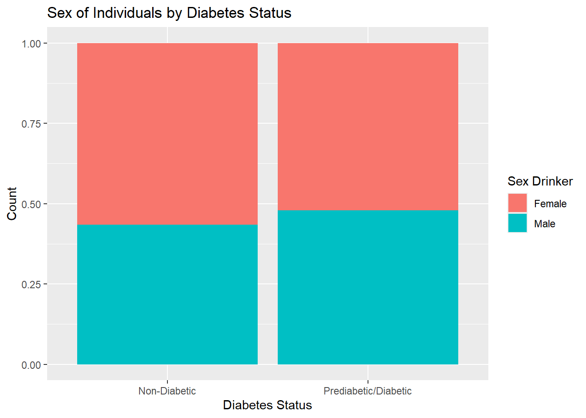
In looking at income, the prevalence of diabetes generally decreases as income increases, indicating that it may be an important predictor of diabetes. This variable will be included in the model fitting process.
The bar chart for better visualization of Income is shown below.
ggplot(diabetes, aes(x = Income, fill = Diabetes_binary)) +geom_bar(position ="fill") +labs(y ="Count", title ="Proportion of Individuals with and without Diabetes by Income Level") +scale_fill_discrete(name="Status", labels =c("Not Diabetic", "Diabetic/Prediabetic")) +theme(axis.text.x =element_text(angle =45, hjust =1))
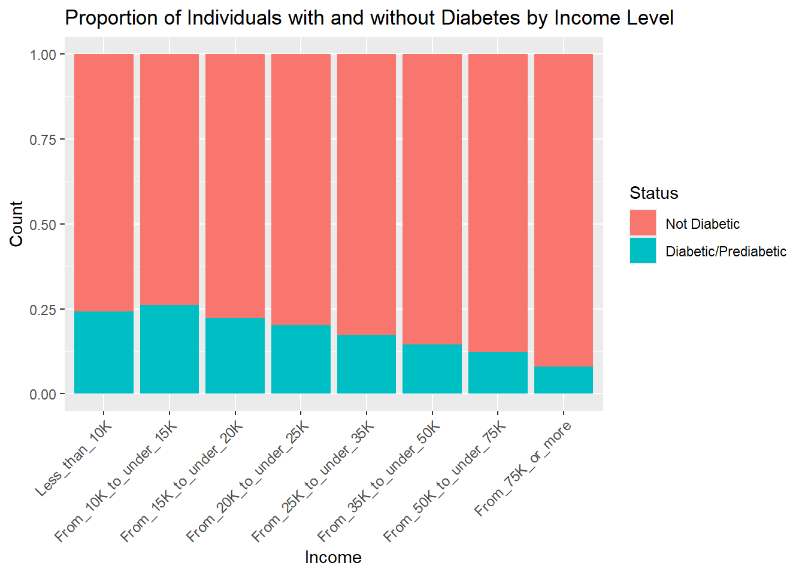
Next, we will examine the contingency table for education. Based on the output, it appears that diabetes decreases with income. This is similar to the contingency table for income, which makes intuitive sense since income is generally associated with level of education.
Looking at the bar chart, the patterns for income and education look nearly identical.
ggplot(diabetes, aes(x = Education, fill = Diabetes_binary)) +geom_bar(position ="fill") +labs(y ="Count", title ="Proportion of Individuals with and without Diabetes by Education Level") +scale_fill_discrete(name="Status", labels =c("Not Diabetic", "Diabetic/Prediabetic")) +theme(axis.text.x =element_text(angle =45, hjust =1))
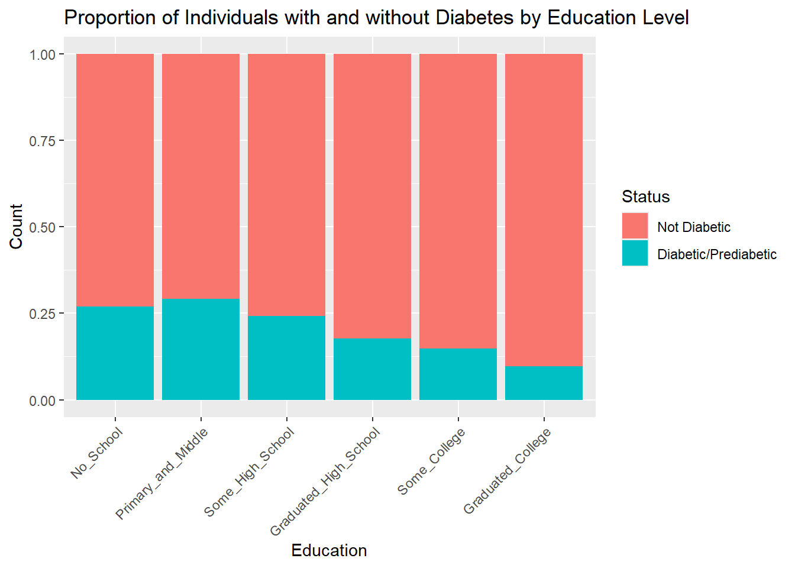
The potential relationship between education and income should be examined because these two variables could be correlated and therefore redundant, which could affect the model predictions. To get a view of the relationship, a contingency table can be created. In looking at the output below, it appears that the number of individuals generally decreases as income level increases at the lower education levels, and increases at the higher education levels, suggesting that these variables are correlated.
#contingency table for education and incomecont_table <- diabetes |>group_by(Education, Income) |>summarize(count =n(), .groups ="drop") |>pivot_wider(names_from = Income, values_from = count)cont_table
We can look into these variables further by testing independence with a Chi-Sqare test. The analysis, shown below, indicates that these variables are correlated, as indicated by the low p-value. Since education has a low frequency of numbers in the “No School” category, dropping this variable from the model fitting is a practical choice.
#make a matrix and remove the Education column namescont_matrix <-as.matrix(cont_table[, -1])#Chi-Square testchisquare_test <-chisq.test(cont_matrix)chisquare_test
Next, we will examine the contingency table for age. Based on the output, it appears that the incidence of diabetes generally increases with age, so this variable will be included in the model fitting.
A visualization of the Age variable is presented below.
ggplot(diabetes, aes(x = Age, fill = Diabetes_binary)) +geom_bar(position ="fill") +labs(y ="Count", title ="Proportion of Individuals with and without Diabetes by Age") +scale_fill_discrete(name="Status", labels =c("Not Diabetic", "Diabetic/Prediabetic")) +theme(axis.text.x =element_text(angle =45, hjust =1))
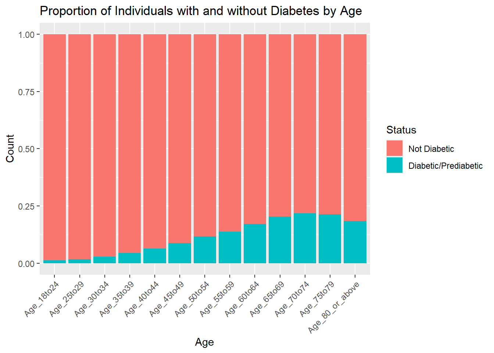
Next, the relationship between the diabetes variable and Fruits will be examined. The proportions for no fruit eaten for diabetics and non-diabetics is fairly similar (0.36 vs 0.41) so this variable will be excluded from modeling.
Similarly, vegetable consumption does not appear to be an important variable for diabetes classification, with proportions for no fruit eaten for diabetics and non-diabetics being 0.18 and 0.24 respectively.
The contingency table for PhysActivity shows that the proportion of diabetics who exercised is 0.777 compared to 0.631 for non-diabetics. This variable may be important for diabetes prediction, although it’s relevance may be more closely tied to how much a person exercises in the time period specified. The question to respondents was if they had engaged in any physical activity in the last 30 days so it does not take into account frequency of exercise in that time period. However, many people who exercise at all try to do so regularly, so this variable will be included in the modeling process.
# A tibble: 2 × 3
PhysActivity Non_Diabetic Prediabetic_Diabetic
<fct> <int> <int>
1 No 48701 13059
2 Yes 169633 22287
The bar chart for PhysActivity is presented below.
ggplot(diabetes, aes(x = Diabetes_binary, fill = PhysActivity)) +geom_bar(position ="fill") +labs(y ="Count", x ="Diabetes Status", title ="Diabetes Status with Respect to Physical Activity") +scale_fill_discrete(name="Physical Activity") +scale_x_discrete(labels =c("Non_Diabetic"="Non-Diabetic", "Prediabetic_Diabetic"="Prediabetic/Diabetic"))
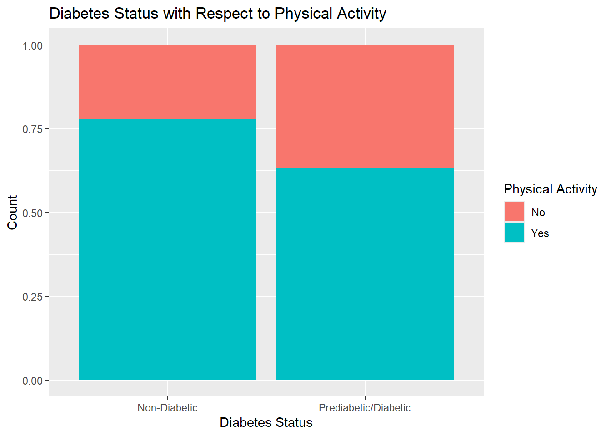
The HvyAlcoholConsump variable may be important for diabetes prediction. The contingency table below shows that the proportion of non-diabetic individuals who drink alcohol heavily is close to 3 times that of diabetics.
# A tibble: 2 × 3
HvyAlcoholConsump Non_Diabetic Prediabetic_Diabetic
<fct> <int> <int>
1 No 204910 34514
2 Yes 13424 832
A bar chart for heavy alcohol consumption is below.
ggplot(diabetes, aes(x = Diabetes_binary, fill = HvyAlcoholConsump)) +geom_bar(position ="fill") +labs(y ="Count", x ="Diabetes Status", title ="Diabetes Status with Respect to Heavy Drinking") +scale_fill_discrete(name="Heavy Drinker") +scale_x_discrete(labels =c("Non_Diabetic"="Non-Diabetic", "Prediabetic_Diabetic"="Prediabetic/Diabetic"))
The NoDocbcCost represents whether an individual did or did not see a doctor because of the healthcare cost. The contingency table shows that the proportions of individuals with who did not see a doctor because of cost was similar for diabetics and non-diabetic, with proportions of 0.106 and 0.081, respectively. Because of the similarity, this variable will not be included in model fitting.
# A tibble: 2 × 3
NoDocbcCost Non_Diabetic Prediabetic_Diabetic
<fct> <int> <int>
1 No 200722 31604
2 Yes 17612 3742
The AnyHealthcare variable is similar in proportion for those who did not have healthcare, with proportions of 0.04 and 0.05 for diabetics and non-diabetics respectively. This variable will be excluded from model fitting.
# A tibble: 2 × 3
AnyHealthcare Non_Diabetic Prediabetic_Diabetic
<fct> <int> <int>
1 No 10995 1422
2 Yes 207339 33924
The contingency table below for the HeartDiseaseorAttack variable suggests that this variable may be important for prediction. About 22% of diabetics had heart disease or a heart attack compared to 7% of those who did not have diabetes.
# A tibble: 2 × 3
HeartDiseaseorAttack Non_Diabetic Prediabetic_Diabetic
<fct> <int> <int>
1 No 202319 27468
2 Yes 16015 7878
Below is a visualization of the HeartDiseaseorAttack variable.
ggplot(diabetes, aes(x = Diabetes_binary, fill = HeartDiseaseorAttack)) +geom_bar(position ="fill") +labs(y ="Count", x ="Diabetes Status", title ="Diabetes Status with Respect to Heart Disease or Heart Attack") +scale_fill_discrete(name="Heart Disease or Attack") +scale_x_discrete(labels =c("Non_Diabetic"="Non-Diabetic", "Prediabetic_Diabetic"="Prediabetic/Diabetic"))
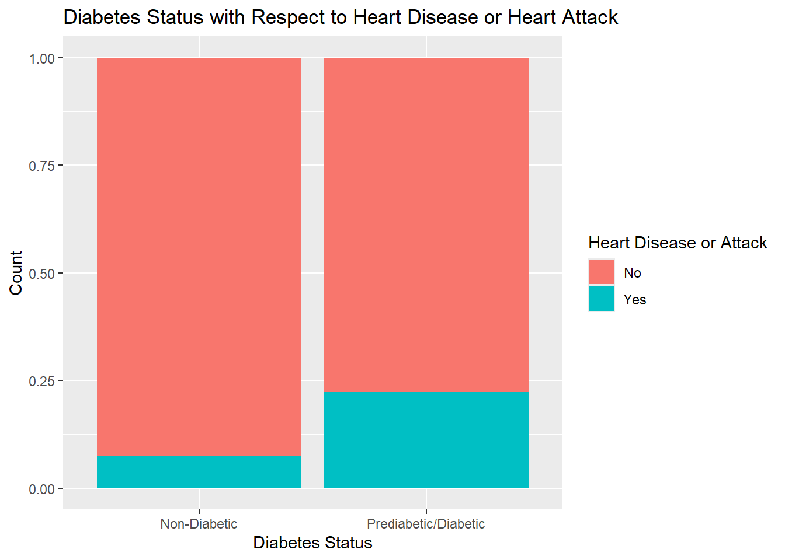
The contingency table for stroke is shown below. Nearly 32% of those respondents who had a stroke had diabetes, compared to those who didn’t have a stroke (13%). This suggests that this variable may be important for prediction.
# A tibble: 2 × 3
Stroke Non_Diabetic Prediabetic_Diabetic
<fct> <int> <int>
1 No 211310 32078
2 Yes 7024 3268
The Smoker variable does not appear to be particularly important for diabetes prediction and the proportions are similar. This seems contradictory since it is known that smokers are more likely to have diabetes since nicotine makes cells less responsive to insulin. But the question for respondents was “Have you smoked at least 100 cigarettes (5 packs) in your entire life?” which communicates nothing about when in their life that was and if they are currently smoking. Consequently, this variable will be left out of the model fitting.
# A tibble: 2 × 3
Smoker Non_Diabetic Prediabetic_Diabetic
<fct> <int> <int>
1 No 124228 17029
2 Yes 94106 18317
Visualization of smoking status is presented below in a bar chart.
ggplot(diabetes, aes(x = Diabetes_binary, fill = Smoker)) +geom_bar(position ="fill") +labs(y ="Count", x ="Diabetes Status", title ="Diabetes Status with Respect to Smoking") +scale_fill_discrete(name="Smoker Status") +scale_x_discrete(labels =c("Non_Diabetic"="Non-Diabetic", "Prediabetic_Diabetic"="Prediabetic/Diabetic"))
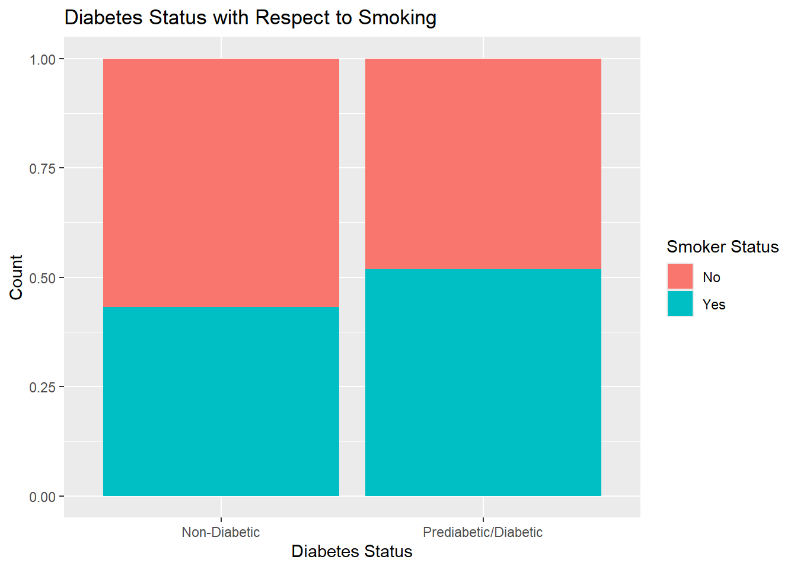
The contingency table for CholCheck shows that the proportions of those with and without diabetes who did not have their cholesterol checked in the last 5 years are 0.007 and 0.04, respectively. While the difference may be significant, people who are sick or have chronic conditions are more likely to have their cholesterol checked more frequently than healthy individuals. Thus this variable is not necessarily important for prediction, but rather reflective of diabetes management, which may also be accompanied by other health conditions. For these reasons, this variable will be excluded from the model fitting.
# A tibble: 2 × 3
CholCheck Non_Diabetic Prediabetic_Diabetic
<fct> <int> <int>
1 No 9229 241
2 Yes 209105 35105
The contingency table for DiffWalk is below. For individuals with diabetes, the proportion of those who responded yes to difficulty walking or climbing stairs is 0.371 compared 0.135 for those without diabetes. This variable may be important for predicting diabetes and will be included in model fitting.
# A tibble: 2 × 3
DiffWalk Non_Diabetic Prediabetic_Diabetic
<fct> <int> <int>
1 No 188780 22225
2 Yes 29554 13121
Visualization of DiffWalk relative to diabetes status is presented below.
ggplot(diabetes, aes(x = Diabetes_binary, fill = DiffWalk)) +geom_bar(position ="fill") +labs(y ="Count", x ="Diabetes Status", title ="Diabetes Status with Respect to Ability to Walk/Climb Stairs") +scale_fill_discrete(name="Difficulty Walking") +scale_x_discrete(labels =c("Non_Diabetic"="Non-Diabetic", "Prediabetic_Diabetic"="Prediabetic/Diabetic"))
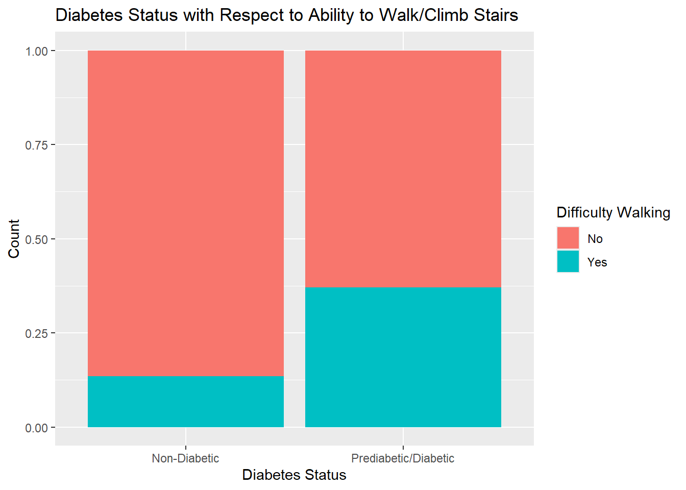
The contingency table for HighChol shows proportions of 0.67 and 0.38 for high cholesterol for diabetics and non-diabetics, respectively. Since this is close to a 2-fold difference and diabetes and high blood pressure often occur together, this variable will be included in the model fitting.
# A tibble: 2 × 3
HighChol Non_Diabetic Prediabetic_Diabetic
<fct> <int> <int>
1 No 134429 11660
2 Yes 83905 23686
A bar chart visualizing HighChol is below.
ggplot(diabetes, aes(x = Diabetes_binary, fill = HighChol)) +geom_bar(position ="fill") +labs(y ="Count", x ="Diabetes Status", title ="Diabetes Status with Respect to Cholesterol") +scale_fill_discrete(name="High Cholesterol Status") +scale_x_discrete(labels =c("Non_Diabetic"="Non-Diabetic", "Prediabetic_Diabetic"="Prediabetic/Diabetic"))
Similar to HighChol, HighBP was more common among diabetics than non-diabetics, with proportions off 0.75 and 0.38, respectively. High blood pressure often occurs in conjunction with diabetes as part of metabolic syndrome and so will be included in the model fitting.
# A tibble: 2 × 3
HighBP Non_Diabetic Prediabetic_Diabetic
<fct> <int> <int>
1 No 136109 8742
2 Yes 82225 26604
Visualization for HighBP is below and similar to that of HighChol.
ggplot(diabetes, aes(x = Diabetes_binary, fill = HighBP)) +geom_bar(position ="fill") +labs(y ="Count", x ="Diabetes Status", title ="Diabetes Status with Respect to Blood Pressure") +scale_fill_discrete(name="High Blood Pressure") +scale_x_discrete(labels =c("Non_Diabetic"="Non-Diabetic", "Prediabetic_Diabetic"="Prediabetic/Diabetic"))
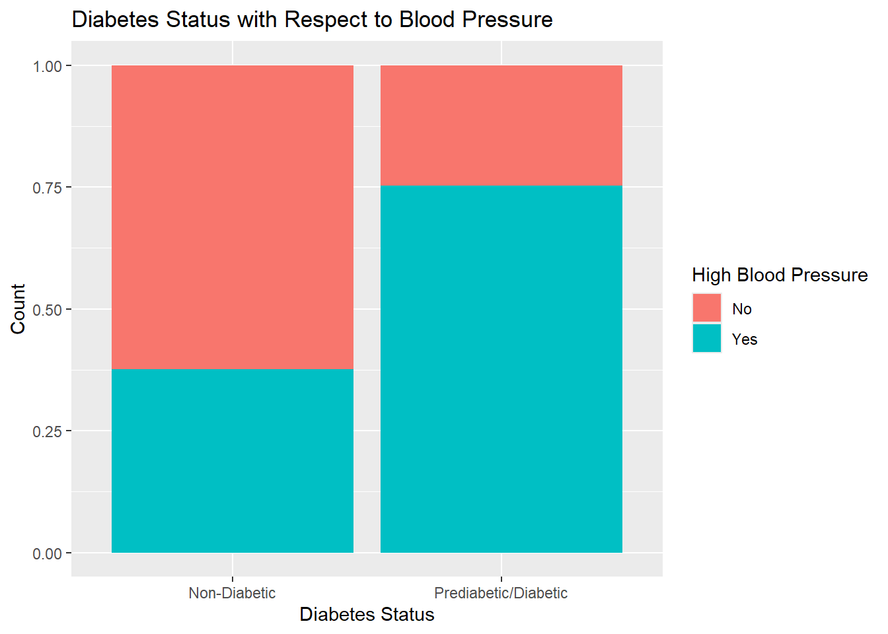
We can look at the distribution of BMI in this data by examining a histogram. The distribution is relatively normal with some right skew. As discussed previously, there are values in the 50-100 range that are not as apparent in this histogram. Since the data is unbalanced, with more respondents not having diabetes, the skewed portion of the histogram likely corresponds to individuals with diabetes. Generally speaking, a BMI between 18.5-24.9 corresponds to a normal weight.
ggplot(data = diabetes, aes(BMI)) +geom_histogram(binwidth =2, fill ="darksalmon", color ="black") +labs(y ="Count")
To view the strength of the relationship between BMI and diabetes, we can use point-biserial correlation, which allows calculation of the correlation between a dichotomous variable and a continuous variable. Point-biserial correlation is a modified form of Pearson correlation and can be performed using cor.test(). Both variables need to be numeric. The output p-value and “true correlation” indicate that the correlation between diabetes and BMI is significant, which is consistent with what is known about type II diabetes. This variable will be included in modeling.
Pearson's product-moment correlation
data: diabetes_corr$BMI and diabetes_corr$Diabetes_binary
t = 111.88, df = 253678, p-value < 2.2e-16
alternative hypothesis: true correlation is not equal to 0
95 percent confidence interval:
0.2131315 0.2205484
sample estimates:
cor
0.2168431
The MentHlth variable measures the number of days out of the last 30 the individual felt that their physical health was not good. The means look different but the standard deviations are high.
The significance of the difference in means can be determined using a t-test. The t-test indicates that the differences are significant, so this variable will be included in the modeling.
t_test_MentHlth <-t.test(MentHlth ~ Diabetes_binary, data = diabetes)t_test_MentHlth
Welch Two Sample t-test
data: MentHlth by Diabetes_binary
t = -29.695, df = 42872, p-value < 2.2e-16
alternative hypothesis: true difference in means between group Non_Diabetic and group Prediabetic_Diabetic is not equal to 0
95 percent confidence interval:
-1.581710 -1.385835
sample estimates:
mean in group Non_Diabetic mean in group Prediabetic_Diabetic
2.978034 4.461806
Below is the distribution of the MentHlth variable. It is not normal, but given the number of observation, the t-test holds due to the Central Limit Theorem.
ggplot(data = diabetes, aes(MentHlth)) +geom_histogram(binwidth =2, fill ="darksalmon", color ="black") +labs(y ="Count")
The PhysHlth variable measures the number of days out of the last 30 the individual felt that their physical health was not good. The means look different but the standard deviations are high.
The significance of the difference in means for PhysHlth can be determined using a t-test. The t-test indicates that the differences are significant, so this variable will be included in the modeling.
t_test_PhysHlth <-t.test(PhysHlth ~ Diabetes_binary, data = diabetes)t_test_PhysHlth
Welch Two Sample t-test
data: PhysHlth by Diabetes_binary
t = -68.969, df = 41367, p-value < 2.2e-16
alternative hypothesis: true difference in means between group Non_Diabetic and group Prediabetic_Diabetic is not equal to 0
95 percent confidence interval:
-4.435979 -4.190814
sample estimates:
mean in group Non_Diabetic mean in group Prediabetic_Diabetic
3.641082 7.954479
Below is the distribution of the PhysHlth variable. It is not normal, but given the number of observations, the t-test holds.
ggplot(data = diabetes, aes(PhysHlth)) +geom_histogram(binwidth =2, fill ="darksalmon", color ="black") +labs(y ="Count")
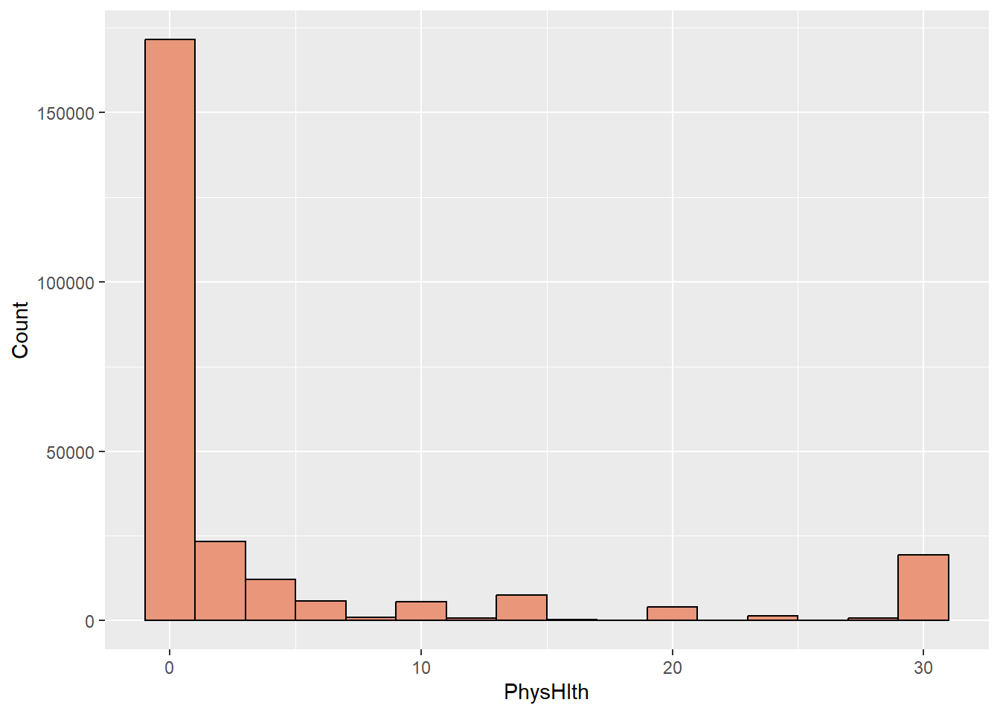
The contingency table of the GenHlth variable shows that a significantly higher proportion of non-diabetics viewed their health as being “excellent” compared to diabetics (0.20 vs. 0.032). For each subsequent level of progressively worsening opinion of general health, the proportion of diabetics increased while that of non-diabetics decreased (0.034 vs. 0.130 for poor rating). This variable may be important for prediction and will be included in the model fitting.
A visualization of the general health variable is shown below.
ggplot(diabetes, aes(x = GenHlth, fill = Diabetes_binary)) +geom_bar(position ="fill") +labs(y ="Count", title ="Proportion of individuals with and without Diabetes by General Health Status") +scale_fill_discrete(name="Status", labels =c("Not Diabetic", "Diabetic/Prediabetic"))
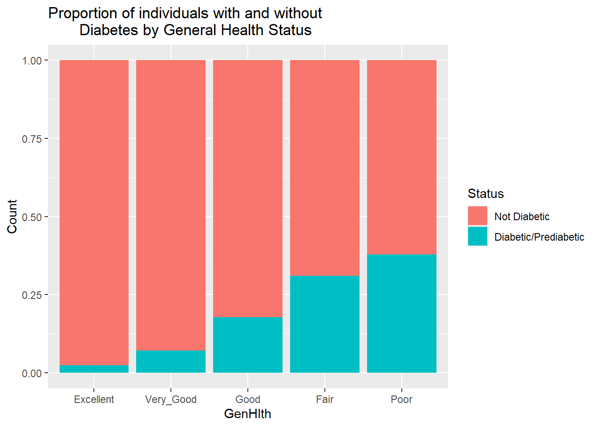
Data export for Modeling
A csv file is being created to import into the Modeling document. Unfortunately the categorical variables will need to be converted to factors again, but the labels will not need to be created again.
write_csv(diabetes, "diabetes.csv")
Conclusion
Based on the exploratory data analysis, the variables have been reduced down to 13 from 21. This will be compared to two other models as discussed in the Modeling document. The model fitting can be accessed in the link below.